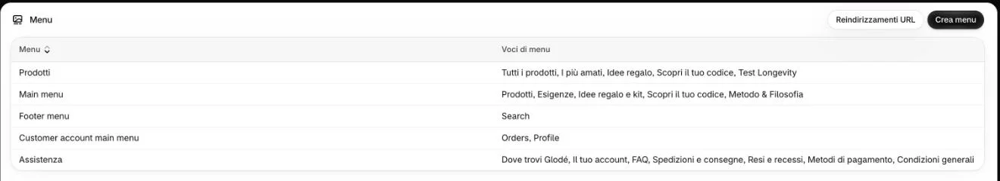
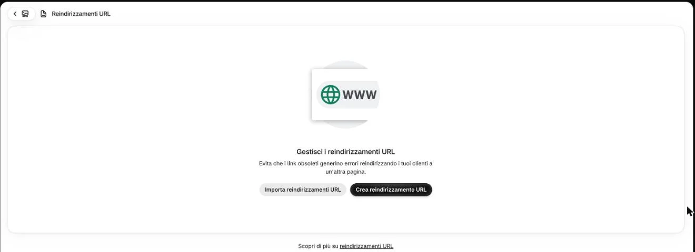

Reindirizzare un vecchio indirizzo
- 3 minuti
- Raro: dopo aver tolto un prodotto
Quando archiviate un prodotto o cambiate l’indirizzo di una pagina, il vecchio link (da Google, da un messaggio, da un post) porta a «pagina non trovata». Un reindirizzamento lo manda a una pagina che esiste.
-
Cliccate «Contenuto» → «Menu», poi «Reindirizzamenti URL» in alto a destra.

1 -
Cliccate «Crea reindirizzamento URL».

Non qui 2E «Importa reindirizzamenti URL»?
Serve per caricarne tanti da un file: non serve.
-
Scrivete il vecchio indirizzo e quello nuovo, poi salvate.
Come si scrivono?
Solo la parte dopo glode-lab.it, che comincia con /. Per esempio: vecchio /products/nome-del-prodotto-tolto, nuovo /collections/sieri (la sua famiglia).
Quella pagina non l’abbiamo aperta insieme: se le caselle non sono due, scriveteci.
Serve anche con la «Bozza»?
No: se il prodotto tornerà, lasciate l’indirizzo com’è.
-
Aprite il vecchio indirizzo nel browser e controllate che porti alla pagina nuova.
Sul sito
Chi apre il vecchio indirizzo arriva direttamente alla pagina nuova, senza vedere «pagina non trovata».